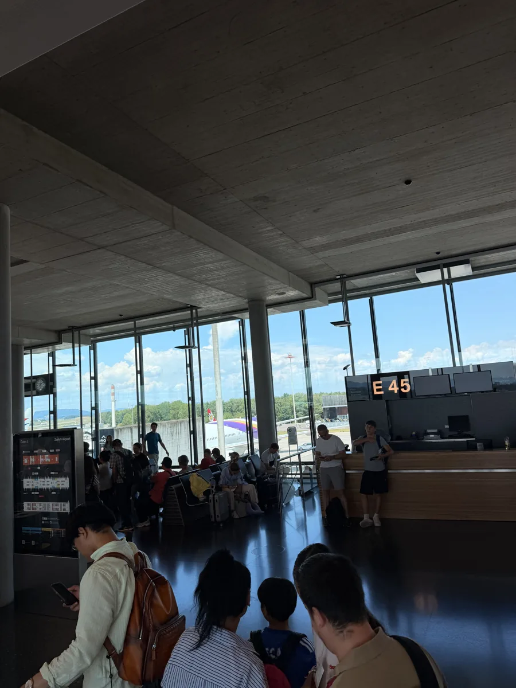
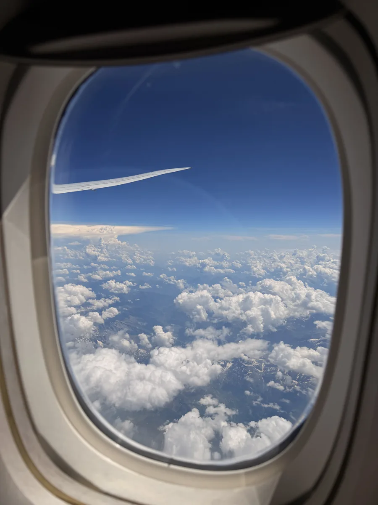
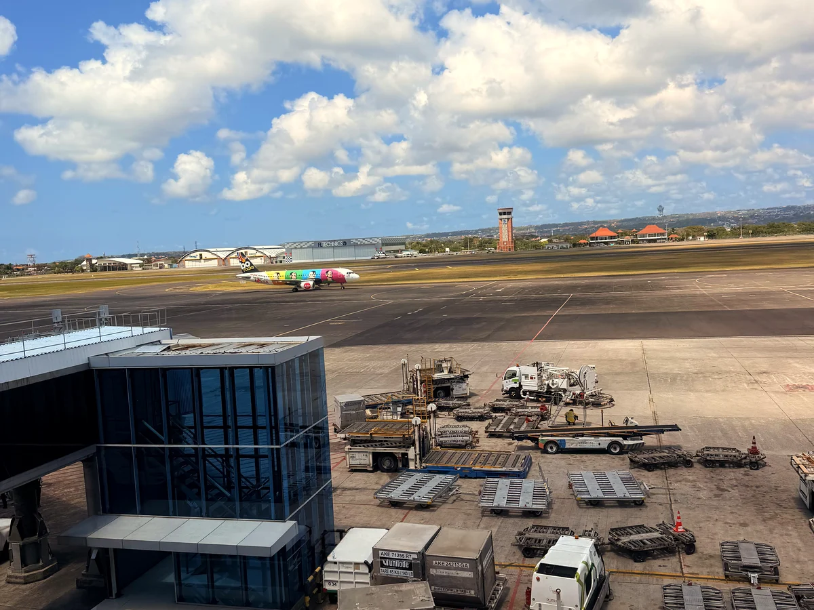

Seit Juni 2026 reisen wir ohne festen Rückflug. Wir entscheiden unterwegs, wie lange wir bleiben und wohin es danach geht. In Langkawi stiess diese Freiheit an eine ganz praktische Grenze: Vor unserem Flug nach Chiang Mai sollten wir zeigen, wie wir Thailand wieder verlassen würden.
So lief es bei uns in Langkawi
Unser Ziel war Chiang Mai, mit Umstieg in Kuala Lumpur. Einen Flug aus Thailand heraus wollten wir noch nicht festlegen. Vor dem Abflug mussten wir aber genau dafür einen Nachweis zeigen. Die Frage kam also, bevor wir überhaupt in Thailand waren.
Wir besorgten eine befristete Flugreservierung auf unsere Namen, die eine Weiterreise aus Thailand zeigte. Den Nachweis zeigten wir in Langkawi vor. Er wurde akzeptiert, und wir konnten wie geplant fliegen. Seitdem klären wir solche Fragen vor dem Weg zum Flughafen.
Zur Einordnung: Unser Nachweis stammte von einem anderen Onward-Ticket-Dienst. Volward haben wir für diesen Flug nicht benutzt.
Die Reservierung war unser Nachweis für den Abreisetag. Für die tatsächliche Weiterreise aus Thailand brauchten wir später ein eigenes Ticket. Wenn du ebenfalls ohne feste Ausreiseroute unterwegs bist, findest du weiter unten die schnelle Reservierungsoption und die Punkte, auf die wir achten würden.
Was ist ein Onward Ticket?
«Onward» heisst weiter. Bei der Einreise soll ein Ticket zeigen, dass du das Land innerhalb der erlaubten Aufenthaltsdauer wieder verlässt. Hast du bereits einen echten Flug, Bus oder eine Fähre ins nächste Land gebucht und wird dieses Verkehrsmittel akzeptiert, ist die Sache einfach: Du zeigst diese Buchung.
Die Dienste, die unter «Onward Ticket» verkauft werden, bieten meist etwas anderes an: eine befristete Flugreservierung auf deinen Namen. Du erhältst Flugnummer, Strecke, Datum und einen Buchungscode, den sogenannten PNR. Die Reservierung existiert für eine begrenzte Zeit und verfällt danach. Du kannst mit ihr nicht fliegen. Für die tatsächliche Ausreise musst du später selbst eine Verbindung buchen.
Bei unserem Flug ab Langkawi ging es um den Nachweis für Thailand, nicht um einen Flug zurück in die Schweiz. Ein Weiterreiseticket darf grundsätzlich in ein anderes Land führen, sofern die Regel für deine Einreise das zulässt. Genau deshalb war das Thema für uns als Langzeitreisende relevant.
Wann wird danach gefragt?
Bei uns kam die Frage bereits vor dem Abflug in Langkawi. Auf eine Kontrolle erst nach der Landung in Chiang Mai hatten wir uns also nicht verlassen können. Ob und wann jemand fragt, kann sich von Reise zu Reise unterscheiden. Für die Planung zählt deshalb die Einreisevorgabe, nicht die Geschichte von jemandem, der ohne Nachweis durchgekommen ist.
Für Schweizer Reisende hält das EDA zu Thailand fest, dass ein Rück- oder Weiterreiseticket zur Einreise gehört. Die thailändische Botschaft nennt für die visumfreie Einreise ebenfalls einen Weiterreisenachweis. Das sind die Regeln, die du vor deinem Flug nochmals prüfen solltest: Visum, Pass und Aufenthaltsdauer machen einen Unterschied.


Was muss auf dem Nachweis stimmen?
Vor allem vier Dinge: dein Name wie im Pass, ein Ziel ausserhalb des Landes, ein Ausreisedatum innerhalb der erlaubten Aufenthaltsdauer und eine noch gültige Buchung. Bei einer befristeten Reservierung läuft die Uhr schon ab dem Zeitpunkt der Erstellung. Wenn sie nur 48 Stunden aktiv ist, solltest du sie so buchen, dass sie beim Check-in und bei der Ankunft noch abrufbar ist.
Auch das Verkehrsmittel zählt. Die thailändische Botschaft nennt für die visumfreie Einreise bestätigte Flug-, Zug-, Bus- und Bootstickets. Andere Länder oder Visa können enger formuliert sein. Ein Busticket ist also keine universelle Lösung. Bei Indonesiens Visa on Arrival B1 nennt die Einwanderungsbehörde ein Rück- oder Weiterreiseticket für die Vorabanmeldung.
Bei einem Visumantrag kann der Nachweis schon Tage vor der eigentlichen Einreise nötig sein. Eine Reservierung, die nach 48 Stunden verfällt, deckt dann möglicherweise den Antrag ab, aber nicht mehr den Reisetag. Das muss man getrennt planen. Wenn ausdrücklich ein bezahltes Ticket verlangt wird, brauchst du mehr als eine Reservierung.

Volward: Was bietet der Dienst?
Brauchst du ein
Weiterflugticket?
Eine befristete Flugreservierung mit Buchungscode, per E-Mail zugestellt.
Volward ansehenNachbildung anhand des bereitgestellten Screenshots. Die Felder sind ein Beispiel und keine Buchungsmaske. Die Darstellung ist vereinfacht; Buchung und aktuelle Preise findest du auf der Anbieterwebsite.
Volward ist eine Option, wenn deine nächste Route noch offen ist und für die Einreise eine befristete Reservierung genügt. Du bekommst einen Nachweis auf deinen Namen mit Flugverbindung und Buchungscode (PNR). Die Reservierung läuft 48 Stunden; einen Sitzplatz für die spätere Reise kaufst du damit nicht.
Wir hätten in Langkawi vor allem auf zwei Dinge geschaut: Ist der Nachweis rechtzeitig da? Und ist er beim Check-in noch gültig? Genau hier hat Volward einen praktischen Vorteil: Nach der Zahlung soll das PDF mit überprüfbarem Buchungscode in weniger als 60 Sekunden im E-Mail-Postfach liegen. Du kannst rund um die Uhr und ohne Benutzerkonto buchen. Die einfache Reservierung kostet derzeit ab 14 US-Dollar, eine Hin- und Rückreise ab 21 US-Dollar. Wenn du die Reservierung erst später aktivieren willst, kostet «Activate Later» zusätzlich 2 US-Dollar. Nach der Aktivierung laufen die 48 Stunden.
Mit «Activate Later» kannst du den Start der 48 Stunden selbst wählen – praktisch, wenn dein Flug erst später geht. Trage Namen und Route wie in deinen Reisedokumenten ein und wähle den Zeitpunkt so, dass die Reservierung beim Check-in noch gültig ist. Alle Details findest du in den Bedingungen von Volward.
Ob eine Reservierung für deine Reise genügt, hängt von den jeweiligen Einreisevorgaben ab. Für den späteren Flug brauchst du ein separates Ticket.
Weiterreisenachweis kurzfristig nötig?
Wenn für deine Einreise eine befristete Reservierung reicht, kannst du sie bei Volward online erstellen: ab 14 US-Dollar, mit überprüfbarem Buchungscode und angekündigter Zustellung in unter 60 Sekunden. Prüfe vor dem Bezahlen, ob Datum und Route zu deiner Einreise passen.
Reservierung bei Volward ansehen ↗Affiliate-Link: Bei einer Buchung über diesen Link können wir eine Provision erhalten.
Welche Alternativen gibt es?
Die wirkliche Weiterreise buchen
Wenn du schon weisst, wohin es nach Thailand geht, buche diese Strecke. Du zahlst für etwas, das du auch nutzt, und musst nicht mit einer ablaufenden Reservierung rechnen. Prüfe nur, ob Datum und Verkehrsmittel als Nachweis für deine Einreise akzeptiert werden.
Ein stornierbares Flugticket kaufen
Das kann passen, wenn du einen vollwertigen Flugnachweis brauchst. Es bindet aber zunächst deutlich mehr Geld. «Flexibel» heisst bei Airlines nicht automatisch «kostenlos stornierbar». Lies die Tarifregeln und schau, wann eine Erstattung erfolgt.
Eine befristete Reservierung nutzen
Damit bist du bei der späteren Route flexibler. Es kostet Geld für einen Nachweis, ohne dass du einen Flug bekommst. Die Reservierung muss zum richtigen Zeitpunkt gültig sein, und die Annahme ist nicht garantiert. Für unseren Flug von Langkawi über Kuala Lumpur nach Chiang Mai hat dieses Prinzip mit einem anderen Anbieter funktioniert.
Was würden wir heute machen?
Zuerst prüfen wir die Regel für das Land und das Visum. Steht die nächste Strecke bereits fest, buchen wir sie. Ist sie offen und wird eine Reservierung akzeptiert, ist ein befristeter Dienst eine Option. Dann achten wir besonders auf die 48 Stunden: Wir brauchen den Nachweis vor dem Abflug und möglicherweise noch einmal bei der Ankunft.
In Langkawi hat eine befristete Reservierung unsere offene Reiseplanung möglich gemacht: Nach dem Check konnten wir über Kuala Lumpur nach Chiang Mai fliegen. Wenn wir die nächste Ausreise schon kennen, buchen wir lieber direkt. Bleibt sie offen und genügt für die Einreise eine Reservierung, ist ein Dienst wie Volward eine praktische Möglichkeit: schnell bestellt, mit überprüfbarem Buchungscode und ohne einen Flug zu kaufen, den wir vielleicht nie nutzen.
Unsere Erfahrung: Langkawi – Kuala Lumpur – Chiang Mai, 2026. Bedingungen und Einreisevorgaben geprüft am 13. Oktober 2026.